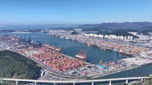
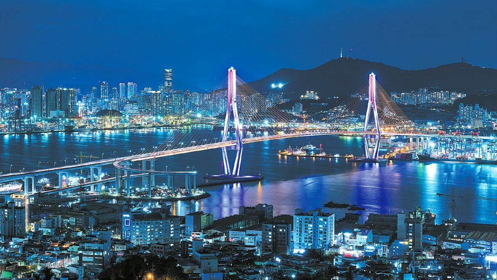

CHAPTER 07
산업화의 기점과 대한민국 경제의 심장 (1970년대 ~ 1990년대)
부산은 대한민국 산업화 시기에 수출 주도형 경제의 중심지였습니다. '메이드 인 코리아' 제품들이 전 세계로 나가는 현관 역할을 하며 도시가 폭발적으로 성장했습니다.
- 경공업의 메카신발, 섬유 산업 등 노동집약적 산업이 부산에서 꽃을 피웠습니다. 당시 부산의 신발 산업은 전 세계 시장을 주도할 정도로 그 규모가 대단했습니다.
- 도시 인프라의 확장늘어나는 인구와 물동량을 감당하기 위해 번영로(도시고속도로)와 지하철 1호선이 개통되었으며, 해운대 일대가 새로운 도심으로 개발되기 시작했습니다.
- 컨테이너 항만의 발전부산항이 단순한 항구가 아닌, 세계적인 컨테이너 전용 부두를 갖추며 동북아시아의 물류 거점으로 자리매김했습니다.

CHAPTER 08
바다와 땅의 조화, 정착과 풍요를 꿈꾸다
부산의 선사문화가 가장 화려하게 꽃피운 시기입니다. 특히 부산은 '패총(조개무덤)의 도시'라고 불릴 만큼 풍부한 해양 자원을 적극적으로 활용했습니다.
- 영화와 축제의 도시 부산국제영화제(BIFF)의 성공으로 아시아 영화의 중심지가 되었으며, 영화의 전당과 같은 랜드마크가 들어서며 '창의 도시'로서의 면모를 갖췄습니다.
- 마이스(MICE) 산업과 금융 산업과 금융: 센텀시티와 벡스코(BEXCO)를 중심으로 대규모 국제 행사를 유치하고, 문현금융단지를 통해 해양 금융의 중심지로 도약하고 있습니다.
- 미래를 향한 변화 북항 재개발 사업과 가덕도 신공항 추진 등을 통해 낡은 산업 항구에서 시민들이 즐길 수 있는 수변 공간이자, 24시간 운영되는 글로벌 관문 도시로 변모하고 있습니다. 관련 사이트 방문하기